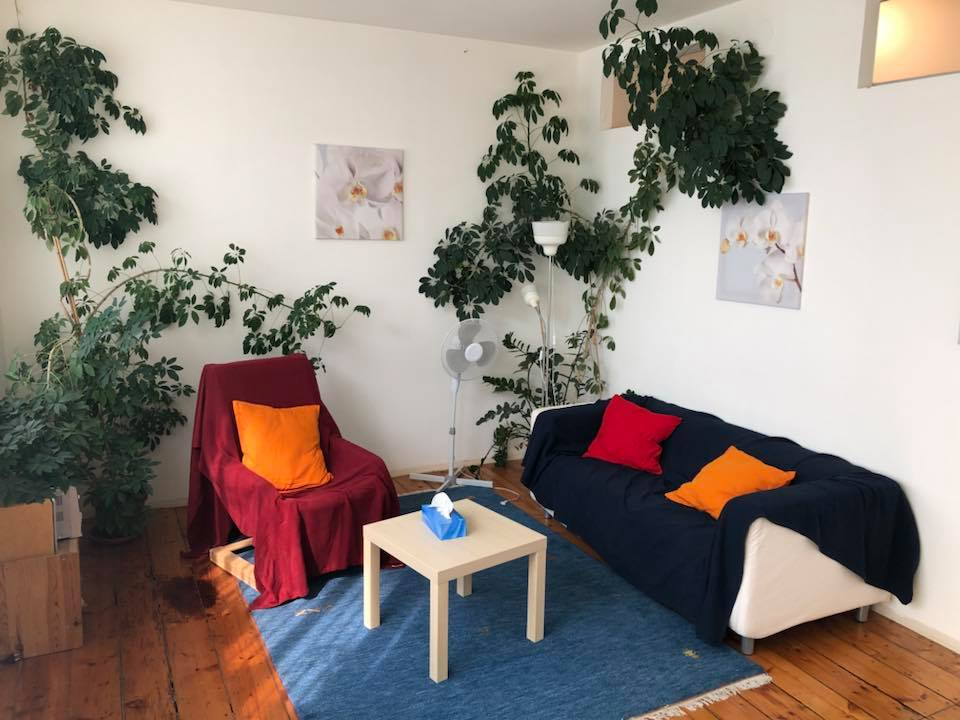

Am Beginn eines Therapieprozesses steht ein unverbindliches Erstgespräch.
Hier gibt es Raum in Ruhe Ihr Anliegen zu besprechen und Rahmenbedingungen zu klären. Außerdem dient es dem gegenseitigen Kennenlernen, die Passung zwischen Therapeutin und Klient*in ist wichtig für den Therapieerfolg.
Wenn Sie dann einen Psychotherapieprozess beginnen, empfiehlt sich besonders in der Anfangsphase die Frequenz von einer Einheit pro Woche.
Das Erstgespräch sowie jede weitere Einheit dauert 50 Minuten und kostet 90 Euro.
Sozialtarife sind auf Anfrage möglich.
Ich bin als Psychotherapeutin eingetragen in die Liste des Gesundheitsministeriums. Es ist möglich, Kostenzuschüsse von Ihrer jeweiligen Krankenkasse zu beantragen.
Verschwiegenheit:
Psychotherapeut*innen unterliegen einer gesetzlich verankerten absoluten Verschwiegenheitspflicht. Diese Verschwiegenheitspflicht dient dem Schutz der für das Gelingen der Psychotherapie unabdingbaren Vertrauensbeziehung zwischen Klient*in und Psychotherapeut*in (§ 15 PthG).
Absageregelung:
Bereits ausgemachte Stunden können bis zu 48 Stunden vorher kostenfrei abgesagt werden. Kurzfristig abgesagte Stunden müssen verrechnet werden.